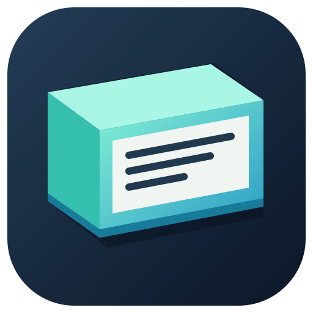

Зажми мышь и вращай модель • колесо — масштаб
Файл создаётся на этом устройстве, без сервера
В Creality Print открой экспортированный файл и проверь масштаб, назначение цветов, слои и поддержку нависаний до печати.